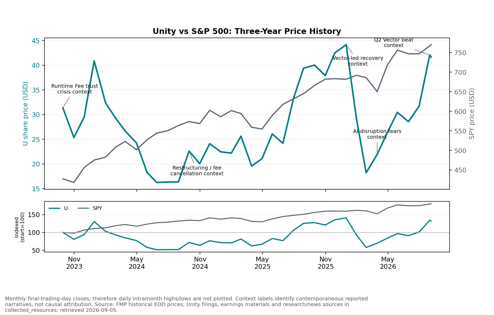
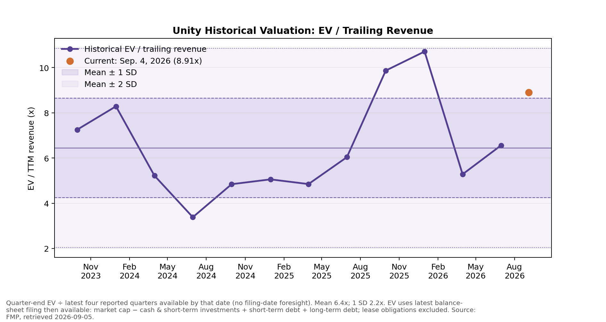
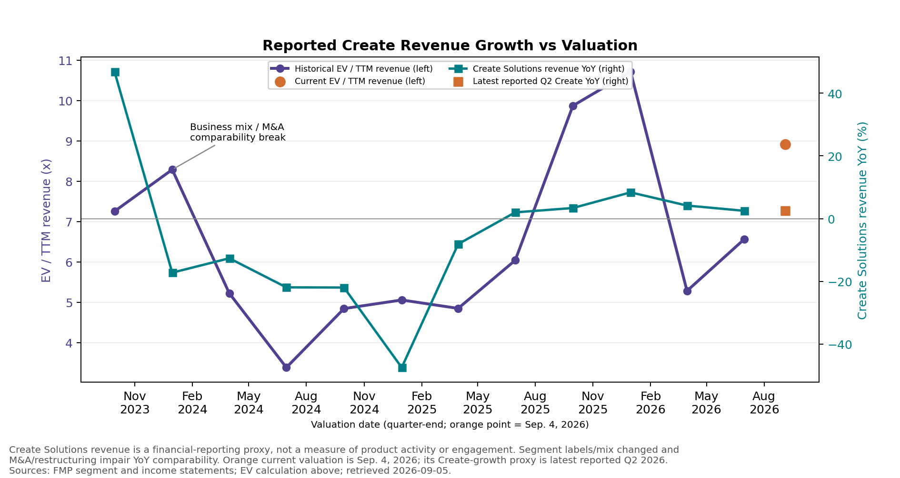

Ticker: NYSE · U
研究日: 2026-09-05
分类: 观察名单 · 待验证
Unity
修复已被看见，
数据优势仍待证明
Situation Report · Portfolio Manager 初筛 · 美元口径
1. 执行判断
结论：留在观察名单，暂不升为“结构性错价”的优先研究标的。Unity 的经营修复有实质进展：2026Q2 战略收入同比增长 38.2%，Vector 环比增长 23%，调整后 EBITDA 达 1.602 亿美元。但现价 41.66 美元已对应约 8.2 倍 2026 年预期收入；高盛和摩根士丹利的最新报告都在讨论引擎数据对广告业务的增益，且均给出 50 美元目标价。市场并没有完全忽略这条逻辑。[1][2][3][4][5]
真正值得验证的假设是：Unity 从“开发工具＋广告网络”，变为由开发者自愿授权的 Runtime 行为数据连接的游戏运营平台。如果这些数据持续提升广告主的增量回报、预算留存和模型效果，引擎的价值可能主要在广告与服务端兑现。但二季度的强劲表现尚不能证明这一点：Runtime 信号在季末才开始接入，管理层没有拆分其独立贡献，D28 产品升级、其他模型优化与业务退出同时发生。[2]
本报告的关键反方是：产品优势正在兑现，不代表价格仍错。以现价计算，50 美元只有约 20.0% 上行；若要在未来两至三年实现 50% 上行，需要更高且可持续的每股盈利能力。当前最欠缺的不是再听一遍 AI 叙事，而是广告主 cohort、Runtime 授权覆盖及稀释后现金回报的证据。
2. 信息新鲜度与独立性
| 信息流 | 最新有效证据 | 距研究日 | 审计判断 |
|---|---|---|---|
| A · 卖方 | GS、MS：2026Q2 后报告；基准价为 8 月 6 日 | 约 1 个月 | 最新覆盖两家，另有 UBS / Jefferies 历史材料；不代表全体共识；原件绝对发布日期未可靠抽取，PDF 创建日不作发布日期。 |
| A · 高盛直连 | Marquee 会话不可用 | 本次已尝试 | 另从卖方档案取得高盛 PDF；未取得 Marquee 最新性保证或分析师 XLSX 模型。 |
| A · 新闻 | 海豚投研，2026-08-09 | 27 天 | FreshRSS 仅一篇直接相关全文，属财报分析，独立事实新闻覆盖偏薄。 |
| A · 深度播客 | Vector 产品负责人，2026-03-24；CEO，2025-06-11 | 165 / 451 天 | 适合解释产品机制；不是最新财报验证。主持人与公司存在顾问关系，不能当独立买方证据。 |
| A · 价格与技术 | 2026-09-04 收盘 | 1 天 | FMP 报价、历史价格；yfinance 的 30 交易日指标。少量成交量供应商差异不用于结论。 |
| B · 财报与电话会 | 2026Q2，2026-08-06 披露；2025 年报 | 30 天 | FMP 全文电话会、FMP SEC 检索及 EdgarTools 原始 10-Q/10-K 均已执行。 |
| C · 买方/从业者 | Fundaai，2026-08-09；机制材料至 2024 年 | 27 天至约 2.5 年 | 最新渠道判断可用；缺少可审计的连续 ROAS、预算留存和授权 cohort。 |
三路信息源均已执行。来源数量不等于独立性：新闻、卖方、播客和买方文章有一部分都在解读同一场财报电话会。本报告把公司披露、管理层说法、分析师预测、渠道观点及本报告推断分别标注。
3. 当前经营与交易快照
Unity 的 Create 帮助开发者制作、运行和部署交互内容；Grow 帮助游戏获客与变现。引擎的切换成本来自代码、资产、团队技能和生产流程；广告预算的粘性则来自效果，二者的锁定机制并不相同。Vector 是 Grow 中的核心广告模型平台，不能与整个 Grow 分部混用。
| 项目 | 截至最新可得时点 |
|---|---|
| 价格 / 估值 | 41.66 美元；52 周区间 16.78–52.15 美元；FMP 市值 181.86 亿美元。以 Q2 可转债账面值、现金及少数股东权益桥接，EV 约 183.45 亿美元。[1][5] |
| 流动性与股数 | 现金及等价物 23.520 亿美元；可转债账面值 22.374 亿美元。6 月末流通在外股数 4.400 亿，7 月 29 日 4.401 亿；Q2 non-GAAP 稀释加权股数 4.895 亿。FMP 报价采用约 4.365 亿股，低于 SEC 封面股数约 0.8%，因此市值与 EV 只作近似。[1] |
| 技术状态 | 30 个交易日内股价从 30.44 升至 41.66（+36.9%）；8 月 6 日财报日收盘约 +15.1%。9 月 4 日高于 EMA50（37.97），但 RSI 从 8 月中旬约 85 回落至 52.2，MACD 柱为 −1.00：中期趋势仍强，短期动量已降温。[6] |
| 持仓线索 | FMP 2026Q2 13F 汇总机构持股 3.755 亿股，较上一季增加 0.305 亿股；其机构持股比例 85.75% 是供应商聚合口径，存在申报滞后和口径限制。近期高管申报存在卖出，未核验交易计划原因，不据此判断基本面转弱。当前空头占比未取得可靠数据。[5] |
EV 桥：181.860 亿市值＋22.374 亿可转债账面值−23.520 亿现金＋2.667 亿可赎回非控股权益＋0.063 亿其他非控股权益＝183.445 亿美元；不含租赁负债。若不计非控股权益，EV 为 180.715 亿美元。上述资产负债表时点为 6 月末，未模拟此后资产出售和现金变动。
| 关键指标 | 2026Q2 实际 | 含义 |
|---|---|---|
| 总收入 | 5.465 亿；同比 +23.9% | 包含非战略业务，与核心组合增速不同。 |
| 战略 Grow / Create | 3.290 亿 / 1.575 亿 | Grow 同比约 +63%；Create 剔除上年约 1,200 万一次性项目后同比约 +14%。 |
| Vector | 环比 +23%；年化收入运行率超过 10 亿 | 公司经营口径；年化运行率不是已实现全年收入。 |
| 调整后 EBITDA | 1.602 亿；利润率 29.3% | 同比 +77%；有真实经营杠杆，但排除 SBC、重组和收购摊销。 |
| FCF / 现金流表 SBC | 2.020 亿 / 0.799 亿 | FCF 同比 +59.5%；分析性 FCF−SBC 为 1.220 亿。 |
| GAAP 归属 Unity 净亏损 | 0.236 亿；EPS −0.05 美元 | 合并净亏损为 0.227 亿，差额来自非控股权益归属。 |
实际数据来自 SEC Q2 10-Q 与业绩公告；Vector、调整后的 Create 增长解释来自公司电话会。[1][2]
盈利质量：从“亏损收窄”到每股现金回报
Q1 合并净亏损 3.469 亿美元受到退出业务相关减值显著拖累；H1 长期资产减值约 2.79 亿美元，另有投资减值。不能把 Q1 到 Q2 的 GAAP 改善全部视为经营增长。Q2 调整 EBITDA 排除了 0.756 亿 SBC、0.775 亿收购无形资产摊销及 0.314 亿重组等项目；现金流表 SBC 为 0.799 亿，与 EBITDA 调整口径不同。Supersonic 当时列为待售，并非损益表上单列的终止经营。[1]
截至 Q2 的 TTM FCF 约 5.384 亿美元，对当前市值收益率约 3.0%；以 H1 SEC SBC 加上前两季现金流 SBC 计算，TTM SBC 约 3.419 亿，分析性 FCF−SBC 为 1.965 亿、收益率约 1.1%。这不是会计准则指标，也不是精确“股东自由现金流”；它提示不能忽略股权报酬。估值时若采用该扣减口径，须避免又完整惩罚同一 SBC 的未来稀释。[1][5]
下一季的可核验门槛
公司 Q3 指引，不是已实现结果：战略收入 5.40–5.50 亿美元；战略 Grow 同比 +68%–70%；Vector 环比 +19%–21%；战略 Create 同比 +7%–10%；非战略收入约 0.20 亿；调整 EBITDA 1.85–1.90 亿、利润率约 33%。公司把首次 GAAP 净盈利预期提前至 Q3。总收入指引按战略与非战略相加约 5.60–5.70 亿，不应把战略收入直接当总收入。[2]
4. 估值、预期与 NSM 错配
市场已经使用什么尺子
经营锚是 Vector 增长，估值锚是广告增长转化后的远期 EBITDA，并辅以收入倍数。这与“市场仍只把 Unity 当成增长乏力的引擎订阅公司”的假设矛盾。两家卖方都已明确讨论 Runtime 数据、引擎地位和广告分发优势，因此“数据飞轮”本身不是独家见解；分歧在持续时间、利润率和每股分母。[3][4]
| 机构 / 评级 | 目标价与尺子 | 为什么给这个倍数 |
|---|---|---|
| GS · Neutral | 50 美元；50% 权重采用 NTM+1 年收入 × 7.25 倍，另 50% 采用 NTM+4 年 GAAP EBITDA × 23 倍、以 12% 折现三年。 | 收入倍数由 6 倍上调以维持 EV/Sales-to-growth 0.32 倍；不是无条件加溢价。承认加速，但要求更多渠道证据。高盛历史分部对标含 Adobe、Autodesk、AppLovin、TTD、Meta 等，业务并非完全可比。 |
| MS · Overweight | 50 美元；2027/28 年平均 EBITDA 约 10.50 亿 × 21 倍。 | 明确高于同业回归倍数，理由是游戏引擎地位带来的数据与销售渠道优势；未取得足以独立复算其同业回归的参数。 |
NTM 为未来十二个月，NTM+1/+4 沿用高盛滚动预测口径，不能直接改写成某一财政年度。GS 的 GAAP EBITDA 与其调整 EBITDA 预测不可互换，MS 也需按其模型框架理解。PDF 转换存在表格错列风险，核心倍数以报告文字及估值表交叉核对。
| 预测来源 | 2026E / 2027E / 2028E 收入（十亿美元） | 2026E / 2027E / 2028E 调整或模型 EBITDA（十亿美元） |
|---|---|---|
| GS 分析师 | 2.223 / 2.826 / 3.351 | 0.694 / 1.101 / 1.400 |
| MS 分析师 | 2.229 / 2.799 / 3.189 | 0.691 / 0.887 / 1.214 |
| FMP 营收共识 | 2.224 / 2.701 / 3.247 | 不展示：EBITDA 字段与银行调整口径无法一致化 |
FMP 2026/27 年营收覆盖各 19 位分析师、2028 年 17 位，检索日为 2026-09-05；各估计贡献的更新时间未提供。2026 EBITDA 字段为 1.174 亿，显著不同于约 6.9 亿的银行调整 EBITDA，后续年份也不能假定同一调整定义，故不据此计算“共识调整 EBITDA 倍数”。前瞻数字均是市场或分析师预期，不是未来事实。[3][4][5]
同业比较：广告网络与创作工具分别看
| 公司 | 市值 / EV 十亿美元 | EV / TTM收入 | 最新季度收入同比 | TTM FCF率 |
|---|---|---|---|---|
| Unity | 18.19 / 18.34 | 9.0 倍 | +23.9% | 26.5% |
| AppLovin | 107.69 / 108.15 | 15.8 倍 | +52.8% | 65.9% |
| Adobe | 105.94 / 108.08 | 4.3 倍 | +12.7% | 42.2% |
来源：FMP，2026-09-05 获取，价格截至 9 月 4 日；U/APP 最新季度为 6 月末，ADBE 为 5 月 29 日。U EV 为本报告桥接，同行 EV 使用 FMP 标准口径；FCF率＝最近四季 FCF 合计÷营收合计，未扣 SBC。季度和业务出售的可比性有限，故只作框架对照；不将 TTM 同行倍数与银行远期目标倍数混为一谈。[5]
APP 是广告竞争参照，较高利润率和增长支持更高销售倍数；Adobe 是成熟创作工具现金回报参照，不能据其低倍数认定 Unity 便宜。Unreal/Epic、Godot 对引擎竞争重要，但没有可直接比较的上市公司估值。Unity 需要证明自身的数据与预算反馈循环，不能直接照搬 AppLovin 倍数。
历史价格、估值带与“剪刀差”

图一使用月末收盘价及最新观察点；绝对价格采用分别标示的坐标轴。月度采样无法覆盖每一个交易日峰谷。叙事说明只表示同期讨论背景，不把时间重合当作单一因果证据。

图二采用 EV/TTM 收入作为可复算的历史估值代理；它不是卖方当前主用的远期 EBITDA。历史季度采样均值与标准差只描述历史分布，不是“合理价值带”。收入和资产负债表采用估值日已经披露的数据；历史市值仍依赖 FMP 股数口径，不是逐日完全稀释回测。图中 EV 不计非控股权益，与当前快照桥接口径略有不同。

图三以 Create 报告收入同比增速代理产品价值交付，以 EV/TTM 收入表示定价。Create 收入受提价、收入确认、并购与业务退出影响，不是真实开发者活跃度；曲线用于提出问题，不证明因果或错价。2023 年前后口径有结构断点，且 2025Q4 FMP 分部总和出现错误；已用 SEC 核实该季总收入为 5.031 亿、Create 为 1.649 亿，估值使用正确总收入；其他历史重组造成的代理限制保留。
三层北极星指标：先分清价值创造与获取
| 视角 | 本报告的指标定义与现有证据 |
|---|---|
| CEO NSM：创造价值 | 开发者成功上线并持续运营的游戏所产生的高质量玩家参与与留存。引擎让开发更可靠、更高效；Grow 让获客更有效。理想指标是生产项目留存、上线成功率与玩家长期留存；公司未提供可连续验证的统一序列。约 30 亿月度玩家覆盖是管理层说法，不能直接等同于已获授权、可用的模型信号。 |
| 长期投资者 NSM：获取价值 | 基于自愿数据接入与跨产品采用的、稀释后每股经常性现金回报。中间指标包括授权覆盖、广告主预算留存、增量 ROAS、服务附着率和 SBC/收入。关键是同一批客户在稳定获益后继续付费，而非引擎份额本身。 |
| 市场共识 NSM：交易与估值 | Vector 环比增速 → 战略 Grow 收入 → 调整 EBITDA 预期修正。两家银行已经对引擎数据优势赋值。若 Vector 降速，市场可能迅速压缩未来利润与倍数。 |
| 错配类别 | 部分对齐，机制仍待验证。暂不判定为“健康滞后”：经营与股价已经共同改善，尚缺 investor NSM 独立领先于 market NSM 的证据。若短期增速被错误外推，反而可能成为叙事陷阱。 |
价值创造 → 价值获取
更快、更稳定地制作与运营游戏 → 开发者在生产流程中持续使用 Unity → 自愿授权 Runtime 行为数据并采用运营服务 → 模型改善用户价值预测与广告主增量回报 → 预算留存、广告份额和服务采用提高 → 扣除持续研发成本与股权报酬后，每股现金回报增长
因果链的断点在“授权数据是否产生可重复的增量经济效果”。Runtime 的早期事件时序和游戏行为上下文可能优于仅靠 SDK 的信号，但这种产品解释目前主要来自公司及顾问访谈。APP 的 MAX 竞拍数据、广告库存与反馈规模构成独立优势；引擎份额并不自动等于广告预算份额。AI 可能扩大内容供给，也可能降低工具差异化，不能只计入需求扩张而忽略竞争。[7][8][9]
电话会辩论：哪些回答仍不能验证护城河
| 提问与回答 | 可确认的管理层表述 | 投资解释 / 下一检查 |
|---|---|---|
| Matthew Cost，MS → CEO Bromberg Runtime 与飞轮 | Runtime 信号在 Q2 后期开始进入 Vector；不拆分 Runtime 的单独贡献。 | 支持路线已落地；不证明 Q2 超预期由此驱动。要求同 cohort 的 Runtime on/off 增量实验。全文把提问中的 runtime data 误写成 runtime fee 的可能性高，不能据此推断收费重启。 |
| Eric Sheridan，GS → CEO / CFO Yahes 增长投入与利润率 | 调整毛利率约 82%–83%，通过优先配置资源与业务组合实现杠杆。 | 广告占比和退出低毛利业务有帮助；还需看持续研发、销售费用与 SBC，避免把一次性退出当永续利润率来源。 |
| Omar Dessouky，BofA → CEO 广告主渗透 | 大部分游戏广告主已经认识 Unity，增长更像测试、优化并扩大现有账户预算。 | 支持预算钱包份额而非单纯新增账户数量是核心指标；也意味着用新增客户数衡量 TAM 会失真。 |
| Alec Brondolo，Wells Fargo → CEO AI 与 Commerce | 开放第三方工具；Commerce 为开发者简化直接交易，既提供购买数据，也有小额经济利益。 | 产品价值有合理路径，尚不能给 Commerce 独立大额利润估值；关注采用量、数据权限及实际净收入。 |
以上均为 2026-08-06 电话会 Q&A 的转述。管理层主张与分析推断分列，未把其预计结果列为事实。[2]
三路证据的交叉检验
最重要的一致点：卖方、Fundaai 渠道观点及公司都指向 D28/Vector 效果改善，而不是 Create 座席突然爆发。最重要的不一致点：新闻担忧关闭 ironSource 后的客户迁移放大增长，公司 CFO 则称 Q2 Vector 来自该迁移的增量仅约 300 万美元。这个披露弱化了“全部是内部搬家”的反方，但未替代独立广告主验证。Fundaai 的份额转移判断属于访谈型二级证据，不是审计后的市场份额统计。[2][7][10]
2024 年 Runtime Fee 取消后的信任修复是约束条件：收费可预测、自愿采用、数据许可的重要性并未因 Vector 加速消失。SEC 风险披露也提示定向广告对隐私政策与数据可得性的依赖。本报告不把“引擎有必要性”直接推成“Unity 有独占优势”。[1][7][8]
上行够不够大：目标价不等于预期收益
| 来源情景 | 价格 | 相对 41.66 | 关键说明 |
|---|---|---|---|
| GS 熊 / 基 / 牛 | 28 / 50 / 69 美元 | −32.8% / +20.0% / +65.6% | 混合收入与远期 GAAP EBITDA；非本报告概率预测。 |
| MS 熊 / 基 / 牛 | 18 / 50 / 80 美元 | −56.8% / +20.0% / +92.0% | 12 / 21 / 26 倍情景；盈利和倍数同时变化。 |
每股分母的差异足以改变判断。MS 目标表约用 4.40 亿股，GS 约用 5.02 亿调整股数；两者资本结构与估值期不同，不可机械拼接。仅做分母敏感性：将 MS 约 219.78 亿股权价值除以 5.02 亿股，结果约 43.78 美元，较现价只高 5.1%。这不是修正后的目标价——可转债变股还需要同步调整债务和现金——但说明同为 50 美元并不意味着两家盈利与稀释判断相同。[3][4]
本报告反推的两至三年门槛：若要求价格达到 62.49 美元（+50%），假设届时稀释股数 4.8–5.0 亿、净现金及其他 EV 调整合计净贡献 10 亿美元，并给 21 倍模型 EBITDA，则需要约 13.8–14.4 亿美元的年 EBITDA。公式为（62.49×股数−10 亿）÷21。这已接近 GS 2028E 的 14 亿，高于 MS 2028E 的 12.14 亿；不是简单的“市场没看到复苏”。此计算未折现，且 21 倍是检验假设，不是应得倍数。
5. SitRep 分级：观察名单
| 升级条件 | 判断 | 理由 |
|---|---|---|
| 市场用了错误锚点 | 未充分成立 | 引擎数据赋能广告已经进入银行估值逻辑，当前主要争论是增长斜率和持续期，尚非明显的框架误解。 |
| 正确时有重大上行 | 条件性成立 | 牛市情景有 66%–92% 空间，但伴随显著倍数和盈利假设；基础目标仅约 20%，稀释敏感，不能据此判断高胜率不对称。 |
| 可证伪的验证路径 | 成立 | Q3/Q4 Vector、战略 Grow、Create、SBC、现金回报，以及 Runtime cohort 和 Unity 7 采用可逐步验证。 |
三个升级条件尚未同时满足。Unity 值得保持跟踪，但在缺少独立数据贡献证据时，尚不应仅凭经营反转将其认定为优先错价机会。若后续证据证明市场低估的是数据优势的持续年限，而不只是下一季增速，再升级为针对性深研。
6. 什么会确认或推翻假设
| 窗口 / 指标 | 确认方向 | 反证方向 |
|---|---|---|
| 2026Q3 财报 发布日期未确认 | Vector 达到或超过 +19%–21% 环比指引，战略 Grow 达到 +68%–70% 同比，且退出业务迁移贡献保持有限。 | 明显低于指引，或增量主要来自内部迁移、客户补贴及不可持续预算。 |
| 未来两季 Runtime 与 D28 cohort | 在相同游戏、市场、平台和预算条件下出现可持续增量 ROAS；预算留存与授权覆盖共同提高。 | 只有归因窗口延长后的表观 ROAS 提高，真实增量用户/LTV 无改善；模型提升无法跨客户泛化。 |
| 未来两至三季 Create 与信任 | 控制提价及一次性项目后，生产项目留存、服务附着率与合同续约改善。 | Create 收入主要靠提价，项目流失、转向 Unreal/Godot 或数据授权抵触恶化。 |
| 2026Q3–2027H1 利润与稀释 | GAAP 盈利兑现且非靠处置收益；滚动 FCF−SBC/股持续改善，股数增长受控。 | 调整 EBITDA 增长却无每股现金改善，或付出更高 SBC/补贴才能留住广告预算。 |
| Q4 2026 Beta / Q1 2027 正式版 | Unity 7 按公司所述计划发布，带动生产使用与自愿运营服务采用。 | 延迟、迁移成本高，或者安装/试用增加却不能转化为付费工作流。 |
产品发布与盈利时点是 8 月电话会的管理层计划，非确定事件；上述“确认/反证”是本报告设置的研究检验。2026 年 11 月到期可转债的偿付亦应跟踪，现金还债本身不创造股权价值。
7. 下一步最有价值的尽调
- 优先做广告主 cohort 访谈。找 5–10 家同时使用 Vector 与 APP 的发行商，按 IAA/IAP、iOS/Android、地域、游戏年龄分层；要求同预算增量回报、D7 与 D28 差异、90 天留存预算及平台补贴数据。不要用“效果感觉更好”替代实验。
- 验证 Runtime 的数据边界。取得授权覆盖比例、数据字段与跨游戏可用性，以及不使用 Runtime 时的模型对照。确认开发者确实从该接入受益，避免把潜在覆盖人数当可变现数据资产。
- 统一资本结构与利润模型。逐项建可转债现金偿付/转股、期权与 RSU、SBC 和股数桥，统一 GS/MS 的 EBITDA 与估值期，再判断 50 美元目标有多少来自盈利、多少来自倍数、多少取决于分母。
- Create 做生产客户核验。访谈游戏工作室的技术负责人，核实版本稳定性、升级阻力、AI 对付费座席的影响及 Unity 7 服务采用；Netflix 合作可说明平台相关性，但未披露经济规模，不单独赋值。
核心来源
- SEC 原始披露：Unity 2026Q2 10-Q，2026-08-06；Q2 8-K Exhibit 99.1；2025 10-K，2026-02-11。FMP SEC 检索与 EdgarTools 原文核验，2026-09-05 获取。
- 电话会：Unity Q2 2026 Earnings Call，2026-08-06，FMP earningsTranscript / search-transcripts 全文；公司季度业绩入口。2026-09-05 获取。
- Goldman Sachs：Eric Sheridan / Alex Vegliante，Q2'26 Earnings Review: Operating Momentum Continues to Build with Beat-&-Raise Quarter；2026Q2 后报告，基准价 2026-08-06，Neutral / 50 美元。原始 PDF 与转换文本取自本地卖方档案；另参照 2026-05-07 Q1 报告的同业框架。Marquee 直连不可用。
- Morgan Stanley：The Runway Keeps Getting Longer; Reiterate OW，2026Q2 后，基准价 2026-08-06，OW / 50 美元。原始 PDF 与转换文本取自本地卖方档案。两篇最新报告的精确绝对发布日期未可靠抽取。
- FMP：2026-09-05 获取的 U/APP/ADBE 报价、季度财报、同行 TTM 指标、U 营收预测、13F 汇总、流通股与内部人交易。供应商及方法入口；原始返回均留存。预测与股数存在文中所述口径限制。
- 技术指标：yfinance 日线，2026-07-27–09-04 的 30 个交易日，technical-indicator 技能计算 MACD、RSI、EMA 与布林带。三年图表使用 FMP 历史价格与已披露财务数据，2026-09-05 获取。
- 买方/从业者：Fundaai，APP & U 2Q26，2026-08-09；Eric Seufert，AppLovin’s Ascent，2024-03-06；Unity cancels its engine runtime fee，2024-09-16。IGB 全文档案。
- AI 与引擎：Mobile Dev Memo，World models, interactive entertainment, and the primacy of structure in game design，2026-02-02；Stratechery，Unity CEO 访谈，2025-11-13。IGB 全文档案。
- 深度播客：Mobile Dev Memo — Understanding Unity’s Vector，Felix The，2026-03-24，重点 10:24–12:40、19:32–20:30；Game Theory — Unity: Play & the Innovation Engine，Matt Bromberg，2025-06-11，重点 13:13–14:25、29:45–32:10。两集 YouTube 英语自动字幕全文已保存；首集主持人披露是 Unity AI 顾问。
- 新闻档案：海豚投研，Unity/Vector 2026Q2 财报分析，2026-08-09，FreshRSS 全文档案；仅用于市场关注点与待核验问题，实际数字以公司披露为准。
数据 QA：FMP 2025Q4 分部合计错误不参与总收入估值；Q1 2026 SBC 返回零不采用，改用 SEC H1−Q2 推导；合并净亏损与归属股东亏损分开；股份与 EBITDA 的不同定义不强行拼接。历史 Create 收入为有限代理，原始理论 NSM 尚无公开连续数据。未取得可靠空头仓位、独立广告主 cohort 或高盛原始模型。所有原始材料、计算脚本与运行缺口均保留在本次研究目录。